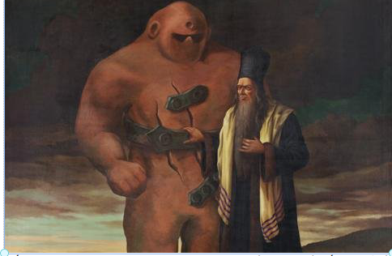
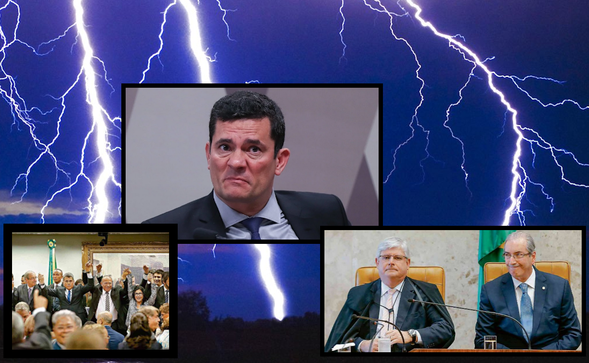

Fatos e narrativas.
|
O mito do Golem e o Judiciário. 
Na tradição mística judaica existe o mito do Golem, um gigante criado do barro e trazido a vida pelo sopro das palavras e com um escrito em sua testa, “emet”, que significa verdade. Foi criado para proteger as vilas judaicas dos progroms e das injustiças. Mas, deram a Golem tanto poder que fora do controle se tornou ele mesmo o poder. Em resumo o Golem deu um golpe. Nosso judiciário tem muito em comum com Golem. |
De Golem a Hydra: uma ópera bufa. 
O monstro de argila que se apossou do poder agora se divide internamente com muitas cabeças vai se transformando numa Hydra se distanciando cada vez mais dos seus fins. A justiça se tornou uma mera palavra retórica. |
|
Na tela terrorismos e atentados suicidas. 
O PMDB desembarca do governo Dilma. Moro desrespeita as leis e propaga a idéia de que vale tudo contra o inimigo escolhido. A medida que o golpe vai se encaminhando se ve o suicidio das instituições perpetrado pelos próprios membros.04/04/2016 |
Prisões Espetáculosas: briga pelo poder no judiciário. 
Nesta semana presenciamos mais um round da briga midiática do judiciário pelo poder. A Lava Jato do Rio tentou assumir a centralidade do processo. Mas a briga está pulverizada, juízes das mais diferentes comarcas buscam os holofotes, porém a imprensa já definiu o seu campeão. |
Golem e o Suicídio do Judiciário. 
O Golem, como o judiciário havia sido criado para levar a verdade e proteger-nos do arbítrio. Mas ele mesmo se encarregou da autodestruição. O Golem tinha, gravado em sua testa, a palavra "EMET" cujo significado é VERDADE .Mas Golem através de atos viu apagada a letra “E” de sua própria testa deixando apenas “MET”, isto é,MORTE" e então se desfez, se tornando pó . |
Os cães ladram e a caravana Guedes passa.

A verborragia ideológica de Bolsonaro sobe de tom enquanto a caravana liberal de Guedes vai passando o rodo. Guedes é o liberal mais puramente ideológico mas só discursa quando necessário aos seus planos de negócios. |
|
A retórica ideológica e a invisibilidade do real.
Bolsonaro não vai sair do palanque, pois ele só existe no palanque retórico e ideológico que montou. O tempo inteiro somos obrigados a debater Olavo, Damares, Velez, Araujo e as frases virulentas de Bolsonaro. Isto serve apenas para continuar o debate nas redes. Trabalhando para tudo isto, jornais e mídia escrevem páginas de crimes e violência ou sobre índices da bolsa ou sobre algum clichê ideológico, criando uma ficção e escondendo a realidade. |
A roleta retórica da Ultradireita.

O mundo intelectual e acadêmico se defronta com a surpresa de ver tantas figuras medíocres com tanta voz e tanto espaço de divulgação e que se travestem de intelectuais e acadêmicos. Mas a surpresa não deveria ser tão grande pois nos últimos tempos desfilaram muitas sumidades de igual teor, que ganharam seus títulos em academias. Eles sabem citar, têm referências e usam da retórica assim como de metodologias consagradas. Nada disto faz seus textos se assentarem na realidade, pois dela pegam apenas excertos que torturam para servirem de argumentação. Eles alimentam também o ódio à cultura e à reflexão. |
No princípio era Serra: golum atrás do “precious".

José Serra foi a figura sombria que iniciou o processo de destruição do Estado de Bem Estar Social. Antes mesmo do impedimento de Dilma, José Serra como o personagem Golum do senhor dos anéis já estava atrás do “precious". A fumaça sombria da lava a jato criou o cenário para sua proposta de PEC do orçamento. A PEC é a manifestação mais clara de que, sabedores das suas fragilidades eleitorais, os neo liberais tucanos não haviam desistido da destruição do estado e perceberam que só incrustando no interior da Constituição poderiam criar as amarras eternas em volta do Estado. |
Guedes e a flexibilização do isolamento, uma tragédia anunciada.
Pouco a pouco instalaram na sociedade a ideia, defendida ardentemente por Guedes de flexibilização do isolamento para uma recuperação da economia. As pressões vem de muitos lados, afinal boa parte da população se encontra abandonada. Um presidente alucinado estimula o que chama de retorno, sem perceber que não existe mais o lugar ao qual quer retornar. Comerciantes, micro empresários, empresários, trabalhadores, empregados, sub empregados iludidos pensam que num passe de mágica tudo voltará ao novo normal.É o anúncio de uma tragédia que certamente virá. Este post escrito em abril de 2019 era pessimista na época e superando a análise, a tragédia anunciada foi muito maior. |